8 JAGS brms
We, of course, will be using brms in place of JAGS.
8.1 JAGS brms and its relation to R
In the opening prargraph in his GitHub repository for brms, Bürkner explained:
The brms package provides an interface to fit Bayesian generalized (non-)linear multivariate multilevel models using Stan, which is a C++ package for performing full Bayesian inference (see http://mc-stan.org/). The formula syntax is very similar to that of the package lme4 to provide a familiar and simple interface for performing regression analyses. A wide range of response distributions are supported, allowing users to fit – among others – linear, robust linear, count data, survival, response times, ordinal, zero-inflated, and even self-defined mixture models all in a multilevel context. Further modeling options include non-linear and smooth terms, auto-correlation structures, censored data, missing value imputation, and quite a few more. In addition, all parameters of the response distribution can be predicted in order to perform distributional regression. Multivariate models (i.e., models with multiple response variables) can be fit, as well. Prior specifications are flexible and explicitly encourage users to apply prior distributions that actually reflect their beliefs. Model fit can easily be assessed and compared with posterior predictive checks, cross-validation, and Bayes factors. (emphasis in the original)
Bürkner’s brms repository includes many helpful links, such as to where brms lives on CRAN, a list of blog posts highlighting brms, and a forum where users can ask questions about brms in specific or about Stan in general.
You can install the current official version of brms in the same way you would any other R package (i.e., install.packages("brms", dependencies = T)). If you want the current developmental version, you could download it from GitHub by executing the following.
8.2 A complete example
We express the likelihood for our coin toss example as
\[y_{i} \sim \text{Bernoulli} (\theta).\]
Our prior will be
\[\theta \sim \text{Beta} (\alpha, \beta).\]
8.2.1 Load data.
“Logically, models of data start with the data. We must know their basic scale and structure to conceive of a descriptive model” (p. 197).
Here we load the data with the readr::read_csv() function, the tidyverse version of base R read.csv().
Unlike what Kruschke wrote about JAGS, the brms package does not require us to convert the data into a list. It can handle data in lists or data frames, of which tibbles are a special case. Here are what the data look like.
## # A tibble: 6 x 1
## y
## <dbl>
## 1 0
## 2 1
## 3 0
## 4 0
## 5 0
## 6 0We might visualize them in a bar plot.
my_data %>%
mutate(y = y %>% as.character()) %>%
ggplot(aes(x = y)) +
geom_bar() +
theme(panel.grid = element_blank())
If you wanted to compute “Ntotal”, the number of rows in our tibble, one way is with count().
## # A tibble: 1 x 1
## n
## <int>
## 1 50However, we’re not going to do anything with an “Ntotal” value. For brms, the data are fine in their current data frame form. No need for a dataList.
8.2.2 Specify model.
Let’s open brms.
The brms package doesn’t have code blocks following the JAGS format or the sequence in Kurschke’s diagrams. Rather, its syntax is modeled in part after the popular frequentist mixed-effects package, lme4. To learn more about how brms compares to lme4, see Bürkner’s overview.
The primary function in brms is brm(). Into this one function we will specify the data, the model, the likelihood function, the prior(s), and any technical settings such as the number of MCMC chains, iterations, and so forth. You can order the arguments in any way you like. My typical practice is to start with data, family (i.e., the likelihood function), the model formula, and my priors. If there are any technical specifications such as the number of MHC iterations I’d like to change from their default values, I usually do that last.
Here’s how to fit the model.
fit1 <-
brm(data = my_data,
family = bernoulli(link = identity),
formula = y ~ 1,
prior(beta(2, 2), class = Intercept),
iter = 500 + 3334, warmup = 500, chains = 3,
seed = 8)For a more detailed explanation of the brms::brm() function, spend some time with the brm section of the brms reference manual.
8.2.3 Initialize chains.
In Stan, and in brms by extension, the initial values have default settings. In Initialization section of the Program Execution chapter in the online Stan Reference Manual, Version 2.21 we read
If there are no user-supplied initial values, the default initialization strategy is to initialize the unconstrained parameters directly with values drawn uniformly from the interval \((−2, 2)\). The bounds of this initialization can be changed but it is always symmetric around 0. The value of 0 is special in that it represents the median of the initialization. An unconstrained value of 0 corresponds to different parameter values depending on the constraints declared on the parameters."
In general, I don’t recommend setting custom initial values in brms or Stan. Under the hood, Stan will transform the parameters to the unconstrained space in models where they are bounded. In our Bernoulli model, \(\theta\) is bounded at 0 and 1. A little further down in the same section, we read
For parameters bounded above and below, the initial value of 0 on the unconstrained scale corresponds to a value at the midpoint of the constraint interval. For probability parameters, bounded below by 0 and above by 1, the transform is the inverse logit, so that an initial unconstrained value of 0 corresponds to a constrained value of 0.5, -2 corresponds to 0.12 and 2 to 0.88. Bounds other than 0 and 1 are just scaled and translated.
If you want to play around with this, have at it. In my experience, the only time it helps to set these manually is when you want to fix them to zero. You can do that by specifying inits = "0" within brm().
8.2.4 Generate chains.
By default, brms will use 4 chains of 2000 iterations each. The type of MCMC brms uses is Hamiltonian Monte Carlo (HMC). You can learn more about HMC at the Stan website, which includes the Stan User’s Guide, the Stan Reference Manual, and a list of tutorials. McElreath also has a nice intro lecture on MCMC in general and HMC in particular. Michael Bentacourt has some good lectures on Stan and HMC, such as here and here. And, of course, we will cover HMC with Kruschke in Chapter 14.
Within each HMC chain, the first \(n\) iterations are warmups. Within the Stan-HMC paradigm, warmups are somewhat analogous to but not synonymous with burn-in iterations as done by the Gibbs sampling in JAGS. But HMC warmups are like Gibbs burn-ins in that both are discarded and not used to describe the posterior. As such, the brms default settings yield 1000 post-warmup iterations for each of the 4 HMC chains. However, we specified iter = 500 + 3334, warmup = 500, chains = 3. Thus instead of defaults, we have 3 HMC chains. Each chain has 500 + 3334 = 3834 total iterations, of which 500 were discarded warmup iterations.
To learn more about the warmup stage in Stan, check out the HMC Algorithm Parameters section of the MCMC Sampling chapter of the Stan Reference Manual
8.2.5 Examine chains.
The brms::plot() function returns a density and trace plot for each model parameter.
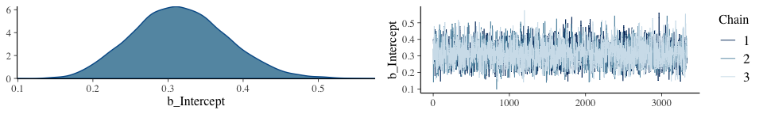
If you want to display each chain as its own density, you can use the handy mcmc_dens_overlay() function from the bayesplot package.
But before we do so, we’ll need to export the posterior samples into a data frame, for which we’ll employ posterior_samples().
Note the add_chain = T argument, which will allow us to differentiate the draws by their chain of origin. But anyway, here are the overlaid densities.
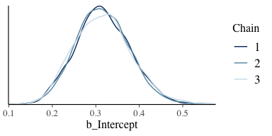
The bayesplot::mcmc_acf() function will give us the autocorrelation plots.
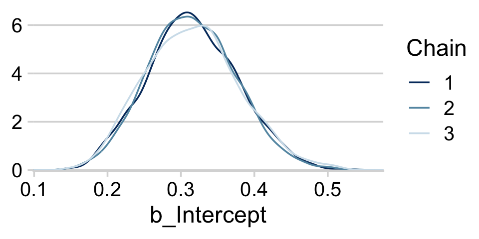
With brms functions, we get a sole \(\hat R\) value for each parameter rather than a running vector.
## b_Intercept
## 1.00023We’ll have to employ brms::as.mcmc() and coda::gelman.plot() to make our running \(\hat R\) plot.
8.2.5.1 The plotPost function How to plot your brms posterior distributions.
plotPost functionWe’ll get into plotting in just a moment. But before we do, here’s a summary of the model.
## Family: bernoulli
## Links: mu = identity
## Formula: y ~ 1
## Data: my_data (Number of observations: 50)
## Samples: 3 chains, each with iter = 3834; warmup = 500; thin = 1;
## total post-warmup samples = 10002
##
## Population-Level Effects:
## Estimate Est.Error l-95% CI u-95% CI Rhat Bulk_ESS Tail_ESS
## Intercept 0.32 0.06 0.20 0.44 1.00 3678 4655
##
## Samples were drawn using sampling(NUTS). For each parameter, Eff.Sample
## is a crude measure of effective sample size, and Rhat is the potential
## scale reduction factor on split chains (at convergence, Rhat = 1).To summarize a posterior in terms of central tendency, brms defaults to the mean value (i.e., the value in the ‘Estimate’ column of the print() output). In many of the other convenience functions, you can also request the median instead. For example, we can use the robust = T argument to get the ‘Estimate’ in terms of the median.
## Estimate Est.Error Q2.5 Q97.5
## b_Intercept 0.314162 0.06271794 0.2005124 0.4431792
## lp__ -30.522541 0.29765456 -32.6877345 -30.3052625Across functions, the intervals default to 95%. With print() and summary() you can adjust the level with a prob argument. For example, here we’ll use 50% intervals.
## Family: bernoulli
## Links: mu = identity
## Formula: y ~ 1
## Data: my_data (Number of observations: 50)
## Samples: 3 chains, each with iter = 3834; warmup = 500; thin = 1;
## total post-warmup samples = 10002
##
## Population-Level Effects:
## Estimate Est.Error l-50% CI u-50% CI Rhat Bulk_ESS Tail_ESS
## Intercept 0.32 0.06 0.27 0.36 1.00 3678 4655
##
## Samples were drawn using sampling(NUTS). For each parameter, Eff.Sample
## is a crude measure of effective sample size, and Rhat is the potential
## scale reduction factor on split chains (at convergence, Rhat = 1).But in many other brms convenience functions, you can use the probs argument to request specific percentile summaries.
## Estimate Est.Error Q2.5 Q25 Q75 Q97.5
## b_Intercept 0.3160697 0.06246065 0.2005124 0.2726817 0.357283 0.4431792
## lp__ -30.7894587 0.68273263 -32.6877345 -30.9497898 -30.354684 -30.3052625Regardless of what prob or probs levels you use, brms functions always return percentile-based estimates. All this central tendency and interval talk will be important in a moment…
When plotting the posterior distribution of a parameter estimated with brms, you typically do so working with the results of an object returned by posterior_samples(). Recall we already saved those samples as post.
## b_Intercept lp__ chain iter
## 1 0.3885602 -31.04295 1 501
## 2 0.4013501 -31.28580 1 502
## 3 0.3733681 -30.79754 1 503
## 4 0.3764648 -30.84373 1 504
## 5 0.3862548 -31.00268 1 505
## 6 0.2774596 -30.42087 1 506With post in hand, we can use ggplot2 to do the typical distributional plots, such as with geom_histogram().
post %>%
ggplot(aes(x = b_Intercept)) +
geom_histogram(color = "grey92", fill = "grey67",
size = .2) +
scale_y_continuous(NULL, breaks = NULL) +
labs(title = "Theta",
x = expression(theta)) +
theme(panel.grid = element_blank())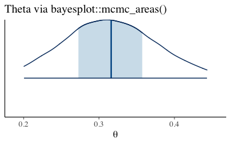
The bayesplot::mcmc_areas() function offers a nice way to depict the posterior densities, along with their percentile-based 50% and 95% ranges.
mcmc_areas(
post,
pars = c("b_Intercept"),
prob = 0.5,
prob_outer = 0.95,
point_est = "mean"
) +
scale_y_discrete(NULL, breaks = NULL) +
labs(title = "Theta",
x = expression(theta)) +
theme(panel.grid = element_blank())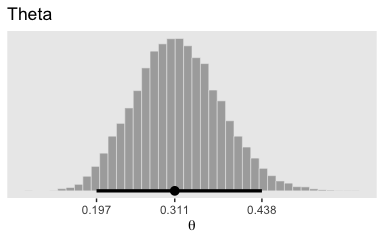
brms doesn’t have a convenient way to compute the posterior mode or HDIs. Base R is no help, either. But Matthew Kay’s tidybayes package makes it easy to compute posterior modes and HDIs. The tidybayes package gives us access to the handy geom_halfeyeh() function.
library(tidybayes)
post %>%
ggplot(aes(x = b_Intercept, y = 0)) +
geom_halfeyeh(point_interval = mode_hdi, .width = c(.95, .5)) +
scale_y_continuous(NULL, breaks = NULL) +
labs(title = "Theta",
x = expression(theta)) +
theme(panel.grid = element_blank())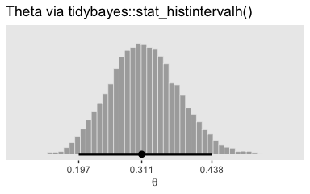
The tidybayes::geom_halfeyeh() function returns a density with a measure of the posterior’s central tendency in a dot and one or multiple interval bands as horizontal lines at the base of the density. Since we used the point_interval = mode_hdi argument, we asked for the mode to be our measure of central tendency and the highest posterior density intervals to be our intervals. With .width = c(.95, .5), we requested our HDIs be at both the 95% and 50% levels.
To be more congruent with Kruschke’s plotting sensibilities, we can combine geom_histogram() with tidybayes::stat_pointintervalh().
# this is unnecessary, but makes for nicer x-axis breaks
my_breaks <-
mode_hdi(post$b_Intercept)[, 1:3] %>%
gather(key, breaks) %>%
mutate(labels = breaks %>% round(digits = 3))
# here's the main plot code
post %>%
ggplot(aes(x = b_Intercept)) +
geom_histogram(color = "grey92", fill = "grey67",
size = .2, bins = 40) +
stat_pointintervalh(aes(y = 0),
point_interval = mode_hdi, .width = .95) +
scale_x_continuous(breaks = my_breaks$breaks,
labels = my_breaks$labels) +
scale_y_continuous(NULL, breaks = NULL) +
labs(title = "Theta",
x = expression(theta)) +
theme(panel.grid = element_blank())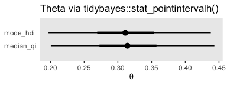
With the point_interval argument within the stat_pointintervalh() function, we can request different combinations of measures of central tendency (i.e., mean, median, mode) and interval types (i.e., percentile-based and HDIs). Although all of these are legitimate ways to summarize a posterior, they can yield somewhat different results. For example, here we’ll contrast our mode + HDI summary with a median + percentile-based interval summary.
post %>%
ggplot(aes(x = b_Intercept)) +
stat_pointintervalh(aes(y = 1), point_interval = median_qi, .width = c(.95, .5)) +
stat_pointintervalh(aes(y = 2), point_interval = mode_hdi, .width = c(.95, .5)) +
scale_y_continuous(NULL, breaks = 1:2,
labels = c("median_qi", "mode_hdi")) +
coord_cartesian(ylim = 0:3) +
labs(title = "Theta",
x = expression(theta)) +
theme(panel.grid = element_blank(),
axis.ticks.y = element_blank(),
axis.text.y = element_text(hjust = 0))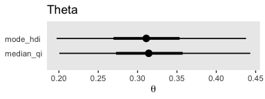
Similar, yet distinct.
8.3 Simplified scripts for frequently used analyses
A lot has happened in R for Bayesian analysis since Kruschke wrote his text. In addition to our use of the tidyverse, the brms, bayesplot, and tidybayes packages offer an array of useful convenience functions. We can and occasionally will write our own. But really, the rich R ecosystem already has us pretty much covered.
8.4 Example: Difference of biases
Here are our new data.
## Observations: 15
## Variables: 2
## $ y <dbl> 1, 0, 1, 1, 1, 1, 1, 0, 0, 0, 1, 0, 0, 1, 0
## $ s <chr> "Reginald", "Reginald", "Reginald", "Reginald", "Reginald", "Reginald", "Reginald", "Re…They look like this.
my_data %>%
mutate(y = y %>% as.character()) %>%
ggplot(aes(x = y)) +
geom_bar() +
theme(panel.grid = element_blank()) +
facet_wrap(~s)
Here we fit the model with brms::brm().
fit2 <-
brm(data = my_data,
family = bernoulli(identity),
y ~ 0 + s,
prior = c(prior(beta(2, 2), class = b, coef = sReginald),
prior(beta(2, 2), class = b, coef = sTony)),
iter = 6000, warmup = 5000, cores = 4, chains = 4,
# this line isn't always necessary, but it will let us use `prior_samples()` later
sample_prior = T,
control = list(adapt_delta = .999),
seed = 8)More typically, we’d parameterize the model as y ~ 1 + s. This form would yield an intercept and a slope. Behind the scenes, brms would treat the nominal s variable as an 0-1 coded dummy variable. One of the nominal levels would become the reverence category, depicted by the Intercept, and the difference between that and the other category would be the s slope. However, with our y ~ 0 + s syntax, we’ve suppressed the typical model intercept. The consequence is that each level of the nominal variable s gets its own intercept or [i] index, if you will. This is analogous to Kruschke’s y[i] ∼ dbern(theta[s[i]]) code.
Also, notice our use of the control = list(adapt_delta = .999) argument. By default, adapt_delta = .8. Leaving it at its default for this model resulted in “divergent transitions after warmup” warnings, which urged me to increase “adapt_delta above 0.8.” The model fit well after raising it to .999 and increasing the number of warmup samples. See the brms Reference manual for more on adapt_delta.
All that aside, here are the chains.
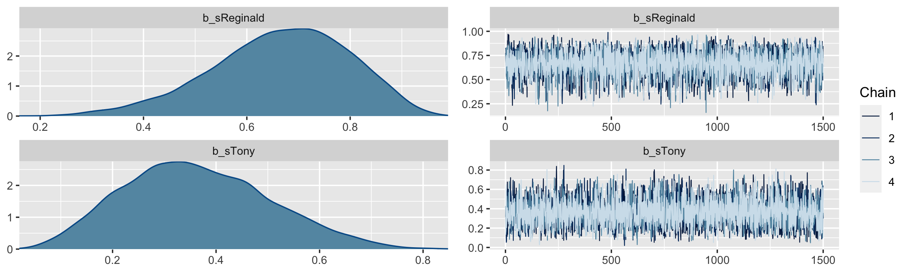
The model summary() is as follows:
## Family: bernoulli
## Links: mu = identity
## Formula: y ~ 0 + s
## Data: my_data (Number of observations: 15)
## Samples: 4 chains, each with iter = 6000; warmup = 5000; thin = 1;
## total post-warmup samples = 4000
##
## Population-Level Effects:
## Estimate Est.Error l-95% CI u-95% CI Rhat Bulk_ESS Tail_ESS
## sReginald 0.67 0.13 0.39 0.89 1.00 1760 1821
## sTony 0.36 0.14 0.13 0.65 1.00 1837 1590
##
## Samples were drawn using sampling(NUTS). For each parameter, Eff.Sample
## is a crude measure of effective sample size, and Rhat is the potential
## scale reduction factor on split chains (at convergence, Rhat = 1).The brms::pairs() function gets us the bulk of Figure 8.6.
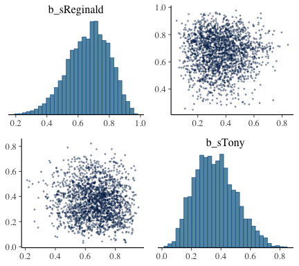
But to get at that difference-score distribution, we’ll have extract the posterior iterations with posterior_samples(), make difference score with mutate(), and manually plot with ggplot2.
post <- posterior_samples(fit2)
post <-
post %>%
rename(theta_Reginald = b_sReginald,
theta_Tony = b_sTony) %>%
mutate(`theta_Reginald - theta_Tony` = theta_Reginald - theta_Tony)
glimpse(post)## Observations: 4,000
## Variables: 6
## $ theta_Reginald <dbl> 0.5287682, 0.6097360, 0.7972532, 0.7778351, 0.7044172, 0.40…
## $ theta_Tony <dbl> 0.3324897, 0.3057314, 0.2492853, 0.2449084, 0.3836122, 0.40…
## $ prior_b_sReginald <dbl> 0.34506299, 0.69256517, 0.44661952, 0.48778682, 0.54056976,…
## $ prior_b_sTony <dbl> 0.1271459, 0.4352422, 0.2385522, 0.6839308, 0.5565150, 0.54…
## $ lp__ <dbl> -8.862774, -8.446904, -8.677803, -8.594283, -8.303235, -10.…
## $ `theta_Reginald - theta_Tony` <dbl> 0.1962784909, 0.3040045478, 0.5479678103, 0.5329266827, 0.3…gathered_post <-
post %>%
select(starts_with("theta")) %>%
gather() %>%
mutate(key = factor(key, levels = c("theta_Reginald", "theta_Tony", "theta_Reginald - theta_Tony")))
gathered_post %>%
ggplot(aes(x = value, group = key)) +
geom_histogram(color = "grey92", fill = "grey67",
size = .2) +
stat_pointintervalh(aes(y = 0),
point_interval = mode_hdi, .width = c(.95, .50)) +
scale_y_continuous(NULL, breaks = NULL) +
theme(panel.grid = element_blank()) +
facet_wrap(~key, scales = "free_x")
Here’s a way to get the numeric summaries out of post.
## # A tibble: 3 x 7
## key value .lower .upper .width .point .interval
## <fct> <dbl> <dbl> <dbl> <dbl> <chr> <chr>
## 1 theta_Reginald 0.707 0.411 0.907 0.95 mode hdi
## 2 theta_Tony 0.297 0.109 0.633 0.95 mode hdi
## 3 theta_Reginald - theta_Tony 0.336 -0.0612 0.680 0.95 mode hdiIn this context, the mode_hdi() summary yields:
key(i.e., the name we used to denote the parameters)value(i.e., the value of the measure of central tendency).lower(i.e., the lower level of the 95% HDI).upper(i.e., the upper level…).width(i.e., what interval we used).point(i.e., the type of measure of central tendency).interval(i.e., the type of interval)
8.5 Sampling from the prior distribution in JAGS brms
The sample_prior = T argument in our brm() code allowed us to extract prior samples with the well-named prior_samples() function.
## b_sReginald b_sTony
## 1 0.3450630 0.1271459
## 2 0.6925652 0.4352422
## 3 0.4466195 0.2385522
## 4 0.4877868 0.6839308
## 5 0.5405698 0.5565150
## 6 0.2326884 0.5445573With prior in hand, we’re almost ready to make the prior histograms of Figure 8.7. But first we’ll want to determine the \(z/N\) values in order to mark them off in the plots. [You’ll note Kruschke did so with gray plus marks in his.]
## # A tibble: 2 x 4
## s z N `z/N`
## <chr> <dbl> <int> <dbl>
## 1 Reginald 6 8 0.75
## 2 Tony 2 7 0.286d_line <-
tibble(value = c(.75, .286, .75 - .286),
key = factor(c("theta_Reginald", "theta_Tony", "theta_Reginald - theta_Tony"),
levels = c("theta_Reginald", "theta_Tony", "theta_Reginald - theta_Tony")))Behold the histograms of Figure 8.7.
prior %>%
rename(theta_Reginald = b_sReginald,
theta_Tony = b_sTony) %>%
mutate(`theta_Reginald - theta_Tony` = theta_Reginald - theta_Tony) %>%
gather() %>%
mutate(key = factor(key, levels = c("theta_Reginald", "theta_Tony", "theta_Reginald - theta_Tony"))) %>%
ggplot(aes(x = value, group = key)) +
geom_vline(data = d_line, aes(xintercept = value),
color = "white", size = 1) +
geom_histogram(color = "grey92", fill = "grey67",
size = .2) +
stat_pointintervalh(aes(y = 0),
point_interval = mode_hdi, .width = c(.95, .50)) +
scale_y_continuous(NULL, breaks = NULL) +
theme_grey() +
theme(panel.grid = element_blank()) +
facet_wrap(~key, scales = "free_x")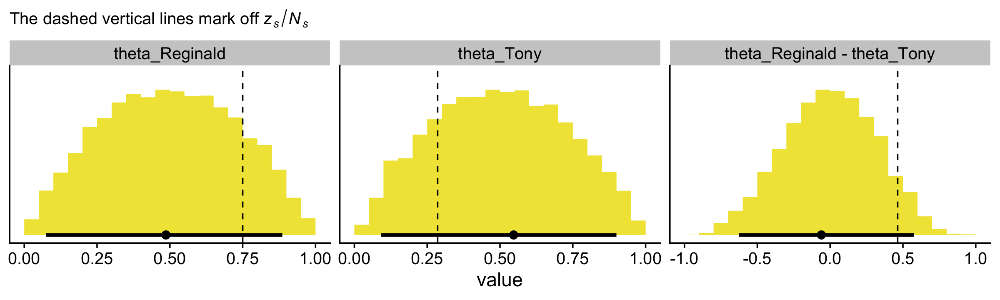
Here’s how to make the scatter plot.
prior %>%
rename(theta_Reginald = b_sReginald,
theta_Tony = b_sTony) %>%
ggplot(aes(x = theta_Reginald, y = theta_Tony)) +
geom_point(alpha = 1/4, color = "grey50") +
coord_equal() +
theme(panel.grid = element_blank())
Or you could always use a two-dimensional density plot with stat_density_2d().
prior %>%
rename(theta_Reginald = b_sReginald,
theta_Tony = b_sTony) %>%
ggplot(aes(x = theta_Reginald, y = theta_Tony)) +
stat_density_2d(aes(fill = stat(density)),
geom = "raster", contour = F) +
scale_fill_viridis_c(option = "B") +
labs(x = expression(theta[1]),
y = expression(theta[2])) +
coord_equal() +
theme(panel.grid = element_blank(),
legend.position = "none")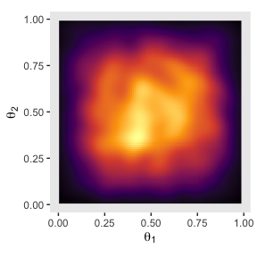
8.6 Probability distributions available in JAGS brms
[brms] has a large collection of frequently used probability distributions that are built-in. These distributions include the beta, gamma, normal, Bernoulli, and binomial along with many others. A complete list of distributions, and their [brms] names, can be found in [Bürkner’s vignette Parameterization of Response Distributions in brms]. (pp. 213–214, emphasis added)
8.6.1 Defining new likelihood functions.
In addition to all the likelihood functions listed in above mentioned vignette, Parameterization of Response Distributions in brms, you can also make your own likelihood functions. Bürkner explained the method in his vignette Define Custom Response Distributions with brms.
8.7 Faster sampling with parallel processing in runjags brms::brm()
We don’t need to open another package to sample in parallel in brms. In fact, we’ve already been doing that. Take another look at the code use used for the last model, fit2.
fit2 <-
brm(data = my_data,
family = bernoulli(identity),
y ~ 0 + s,
prior = c(prior(beta(2, 2), class = b, coef = sReginald),
prior(beta(2, 2), class = b, coef = sTony)),
iter = 6000, warmup = 5000, cores = 4, chains = 4,
sample_prior = T,
control = list(adapt_delta = .999),
seed = 8)See the cores = 4, chains = 4 arguments? With that bit of code, we told brms::brm() we wanted 4 chains, which we ran in parallel across 4 cores.
8.8 Tips for expanding JAGS brms models
I’m in complete agreement with Kruschke, here:
Often, the process of programming a model is done is stages, starting with a simple model and then incrementally incorporating complexifications. At each step, the model is checked for accuracy and efficiency. This procedure of incremental building is useful for creating a desired complex model from scratch, for expanding a previously created model for a new application, and for expanding a model that has been found to be inadequate in a posterior predictive check. (p. 218)
Session info
## R version 3.6.0 (2019-04-26)
## Platform: x86_64-apple-darwin15.6.0 (64-bit)
## Running under: macOS High Sierra 10.13.6
##
## Matrix products: default
## BLAS: /Library/Frameworks/R.framework/Versions/3.6/Resources/lib/libRblas.0.dylib
## LAPACK: /Library/Frameworks/R.framework/Versions/3.6/Resources/lib/libRlapack.dylib
##
## locale:
## [1] en_US.UTF-8/en_US.UTF-8/en_US.UTF-8/C/en_US.UTF-8/en_US.UTF-8
##
## attached base packages:
## [1] stats graphics grDevices utils datasets methods base
##
## other attached packages:
## [1] tidybayes_1.1.0 bayesplot_1.7.0 brms_2.10.3 Rcpp_1.0.2 forcats_0.4.0 stringr_1.4.0
## [7] dplyr_0.8.3 purrr_0.3.3 readr_1.3.1 tidyr_1.0.0 tibble_2.1.3 ggplot2_3.2.1
## [13] tidyverse_1.2.1
##
## loaded via a namespace (and not attached):
## [1] colorspace_1.4-1 ellipsis_0.3.0 ggridges_0.5.1
## [4] rsconnect_0.8.15 ggstance_0.3.2 markdown_1.1
## [7] base64enc_0.1-3 rstudioapi_0.10 rstan_2.19.2
## [10] svUnit_0.7-12 DT_0.9 fansi_0.4.0
## [13] lubridate_1.7.4 xml2_1.2.0 bridgesampling_0.7-2
## [16] knitr_1.23 shinythemes_1.1.2 zeallot_0.1.0
## [19] jsonlite_1.6 broom_0.5.2 shiny_1.3.2
## [22] compiler_3.6.0 httr_1.4.0 backports_1.1.5
## [25] assertthat_0.2.1 Matrix_1.2-17 lazyeval_0.2.2
## [28] cli_1.1.0 later_1.0.0 htmltools_0.4.0
## [31] prettyunits_1.0.2 tools_3.6.0 igraph_1.2.4.1
## [34] coda_0.19-3 gtable_0.3.0 glue_1.3.1.9000
## [37] reshape2_1.4.3 cellranger_1.1.0 vctrs_0.2.0
## [40] nlme_3.1-139 crosstalk_1.0.0 xfun_0.10
## [43] ps_1.3.0 rvest_0.3.4 mime_0.7
## [46] miniUI_0.1.1.1 lifecycle_0.1.0 gtools_3.8.1
## [49] MASS_7.3-51.4 zoo_1.8-6 scales_1.0.0
## [52] colourpicker_1.0 hms_0.4.2 promises_1.1.0
## [55] Brobdingnag_1.2-6 parallel_3.6.0 inline_0.3.15
## [58] shinystan_2.5.0 yaml_2.2.0 gridExtra_2.3
## [61] loo_2.1.0 StanHeaders_2.19.0 stringi_1.4.3
## [64] dygraphs_1.1.1.6 pkgbuild_1.0.5 rlang_0.4.1
## [67] pkgconfig_2.0.3 matrixStats_0.55.0 HDInterval_0.2.0
## [70] evaluate_0.14 lattice_0.20-38 rstantools_2.0.0
## [73] htmlwidgets_1.5 labeling_0.3 tidyselect_0.2.5
## [76] processx_3.4.1 plyr_1.8.4 magrittr_1.5
## [79] R6_2.4.0 generics_0.0.2 pillar_1.4.2
## [82] haven_2.1.0 withr_2.1.2 xts_0.11-2
## [85] abind_1.4-5 modelr_0.1.4 crayon_1.3.4
## [88] arrayhelpers_1.0-20160527 utf8_1.1.4 rmarkdown_1.13
## [91] grid_3.6.0 readxl_1.3.1 callr_3.3.2
## [94] threejs_0.3.1 digest_0.6.21 xtable_1.8-4
## [97] httpuv_1.5.2 stats4_3.6.0 munsell_0.5.0
## [100] viridisLite_0.3.0 shinyjs_1.0